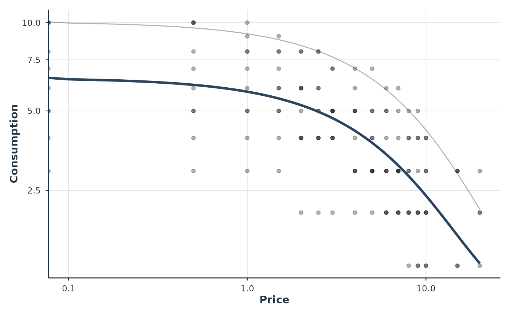
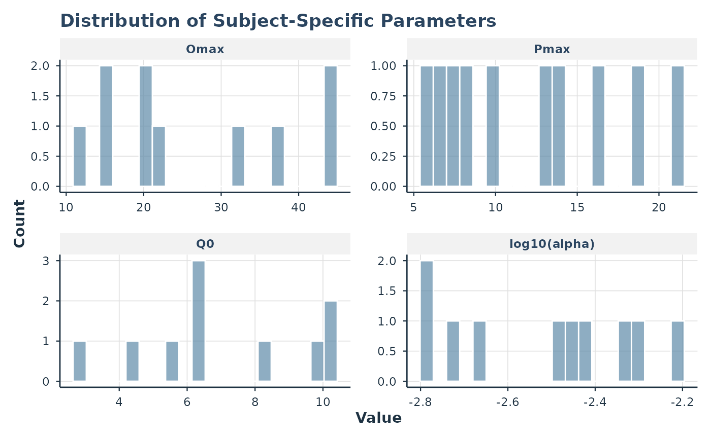

Plot TMB Mixed-Effects Demand Model
Usage
# S3 method for class 'beezdemand_tmb'
plot(
x,
type = c("demand", "individual", "parameters"),
ids = NULL,
prices = NULL,
show_population = TRUE,
show_observed = TRUE,
show_pred = NULL,
x_trans = c("log10", "log", "linear", "pseudo_log"),
y_trans = NULL,
inv_fun = NULL,
x_limits = NULL,
y_limits = NULL,
x_lab = NULL,
y_lab = NULL,
style = c("modern", "apa"),
observed_point_alpha = 0.3,
observed_point_size = 1.5,
pop_line_alpha = 1,
pop_line_size = 1.2,
ind_line_alpha = 0.3,
ind_line_size = 0.5,
...
)Arguments
- x
A
beezdemand_tmbobject.- type
Character. One of
"demand"(population curve with data),"individual"(per-subject curves),"parameters"(parameter distributions).- ids
Character vector of subject IDs to plot (for individual type).
- prices
Optional numeric vector of prices for curve generation.
- show_population
Logical. Show population curve overlay.
- show_observed
Logical. Show observed data points.
- show_pred
Character. Which predictions to show:
"population","individual", or"both". IfNULL(default), determined bytype.- x_trans
Character. X-axis transformation.
- y_trans
Character. Y-axis transformation. If
NULL(default), uses"pseudo_log"which handles zero values gracefully.- inv_fun
Optional function to back-transform y-axis. For
zbenandexponentialequations, the inverse link is applied automatically by default so all demand plots are on the consumption scale.- x_limits, y_limits
Numeric length-2 vectors for axis limits.
- x_lab
Character. X-axis label.
- y_lab
Character. Y-axis label.
- style
Character. Plot style: "modern" or "apa".
- observed_point_alpha, observed_point_size
Numeric. Aesthetics for observed data points.
- pop_line_alpha, pop_line_size
Numeric. Aesthetics for population curve.
- ind_line_alpha, ind_line_size
Numeric. Aesthetics for individual curves.
- ...
Additional arguments.
Examples
# \donttest{
data(apt)
fit <- fit_demand_tmb(apt, equation = "exponential", verbose = 0)
#> equation='exponential': Dropped 14 zero-consumption observations (146 remaining).
# Population demand curve
plot(fit, type = "demand")
#> Warning: log-10 transformation introduced infinite values.
#> Warning: log-10 transformation introduced infinite values.
 # Individual curves for selected subjects
plot(fit, type = "individual", ids = c("19", "51"))
#> Warning: log-10 transformation introduced infinite values.
#> Warning: log-10 transformation introduced infinite values.
#> Warning: log-10 transformation introduced infinite values.
# Individual curves for selected subjects
plot(fit, type = "individual", ids = c("19", "51"))
#> Warning: log-10 transformation introduced infinite values.
#> Warning: log-10 transformation introduced infinite values.
#> Warning: log-10 transformation introduced infinite values.

# Parameter distributions
plot(fit, type = "parameters")

# }